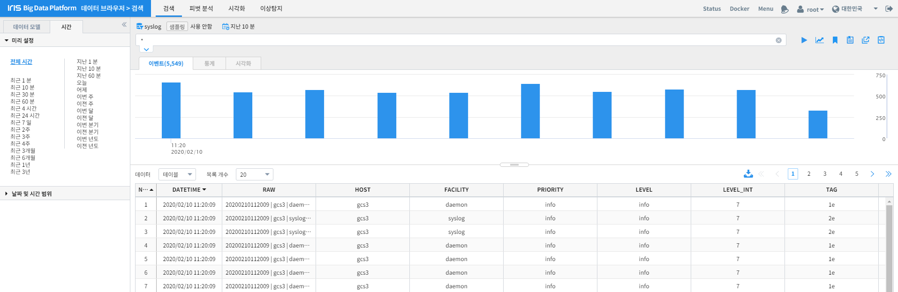
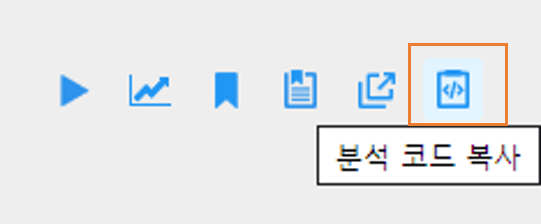
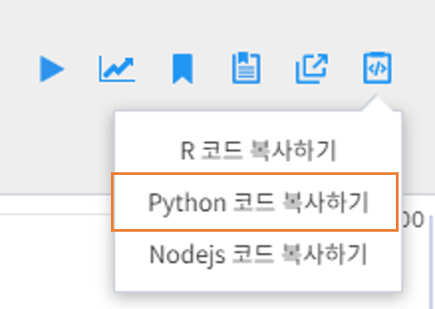
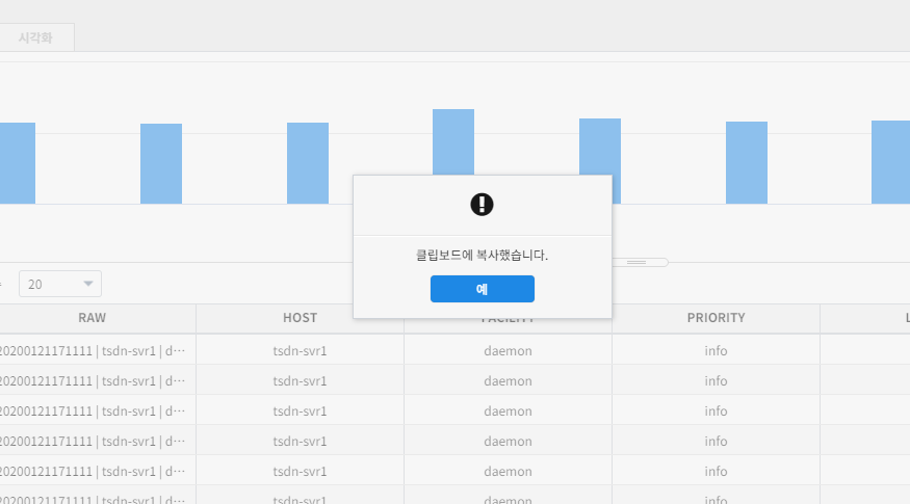
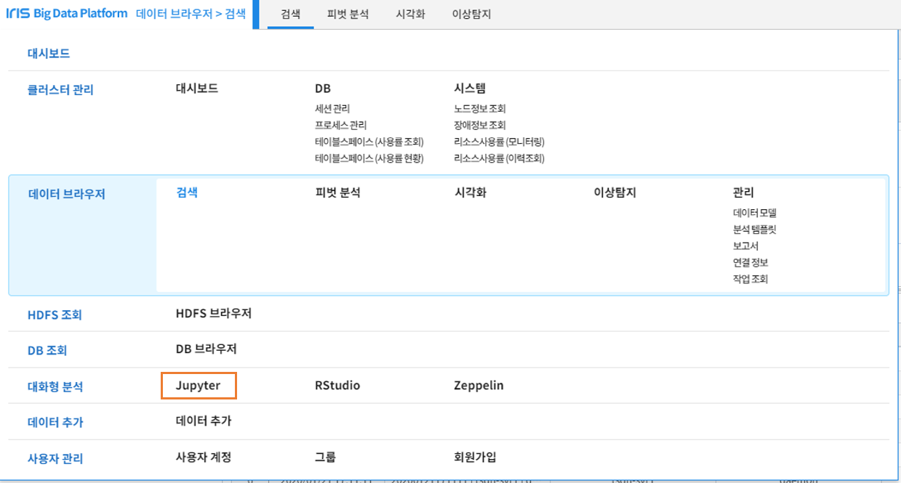
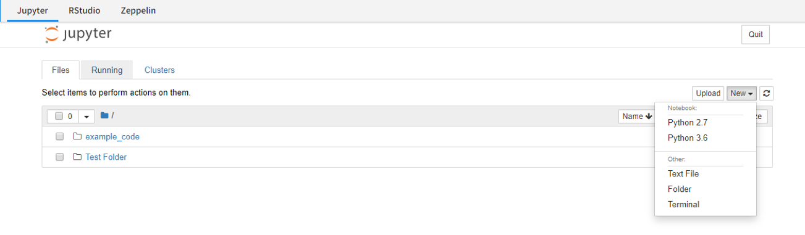

‘검색’ 결과를 Jupyter 데이터로 추가하기¶
개요¶
본 문서는 [검색] 메뉴에서 조회한 데이터 모델을 Jupyter Notebook으로 추가하는 기능의 사용 방법을 기술하고 있습니다.
IRIS 데이터 검색¶
[데이터 브라우저] > [검색] 기능을 통해 Jupyter Notebook으로 전달할 데이터 테이블을 검색합니다.
Python 코드 복사¶
검색 바 오른쪽 [분석코드복사] 아이콘을 클릭합니다.
{kind=link}
[Python 코드 복사하기] 항목을 클릭하여 Python코드를 클립보드에 복사합니다.
{kind=link}
해당 테이블을 Jupyter Notebook에서 로딩할 수 있는 코드가 클립보드에 복사되었습니다.
{kind=link}
Jupyter Notebook 이동¶
대화형분석 > Jupyter 를 클릭하여 IRIS에서 제공하는 Python 사용 환경으로 이동합니다.
{kind=link}
Jupyter Notebook 오른쪽 상단 New 버튼을 클릭하여 새 Notebook 파일을 생성합니다. 필요시 새로운 폴더를 생성할 수 있습니다.
{kind=link}
Python2.7 버전 실행 시¶
새 스크립트 창에 복사-붙여넣기 또는 Ctrl + V 하여 클립보드에 복사된 코드를 삽입합니다. 복사된 코드에는 IRIS 연결 정보 및 테이블 로딩에 관련한 쿼리가 기 작성되어 있습니다.
{kind=link}
{kind=link}
{kind=link}
Python3.6 버전 실행 시¶
새 스크립트 창에 복사-붙여넣기 또는 Ctrl + V 하여 클립보드에 복사된 코드를 삽입합니다. 복사된 코드에는 IRIS 연결 정보 및 테이블 로딩에 관련한 쿼리가 기 작성되어 있습니다.
복사된 코드는 Python2.7 버전이므로 Python3.6 버전에서 실행 시 일부 코드 수정이 필요합니다.
- Python3.6버전에서 “httplib”를 “http.client”로 변경합니다.
from http.client import HTTPConnection
{kind=link}
- try…exception 문의 “except Exception, e” 를 “except Excetpion as e”로 변경합니다.
try :
sid = r["sid"]
except Excetpion as e:
sys.exit()
{kind=link}
- 하단 print 문의 내용을 괄호로 감싸줍니다.
for item in response['results']:
print(str(item))
{kind=link}